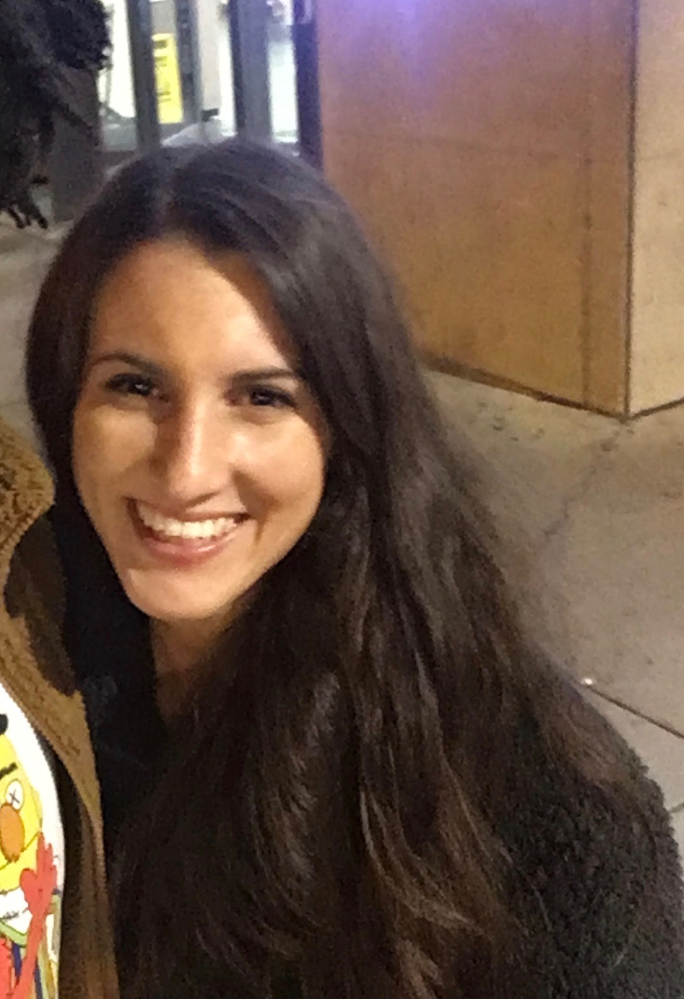
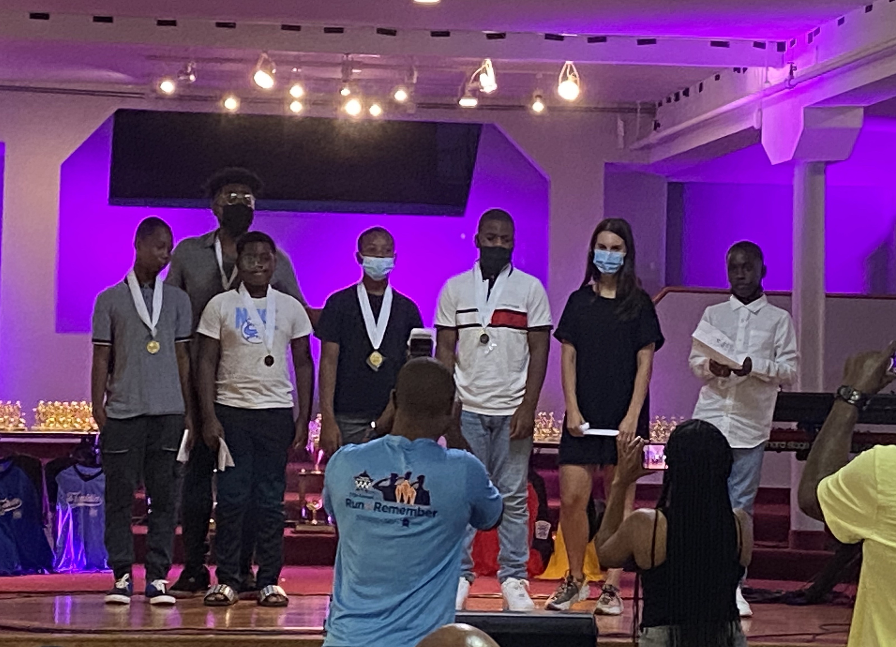
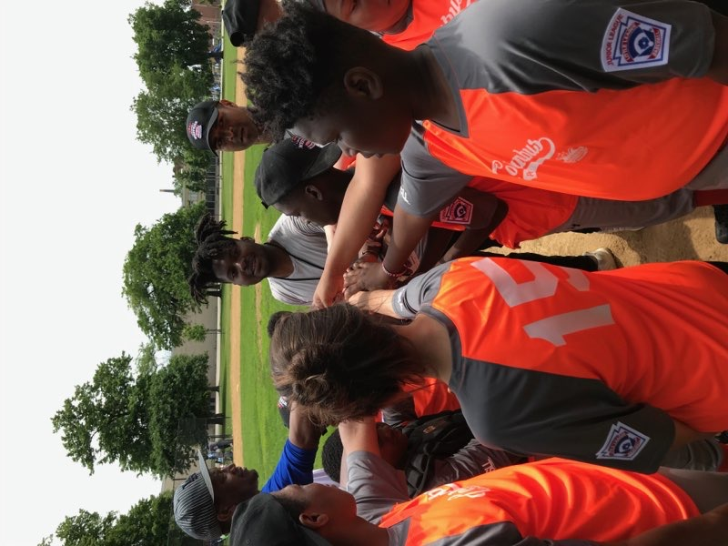
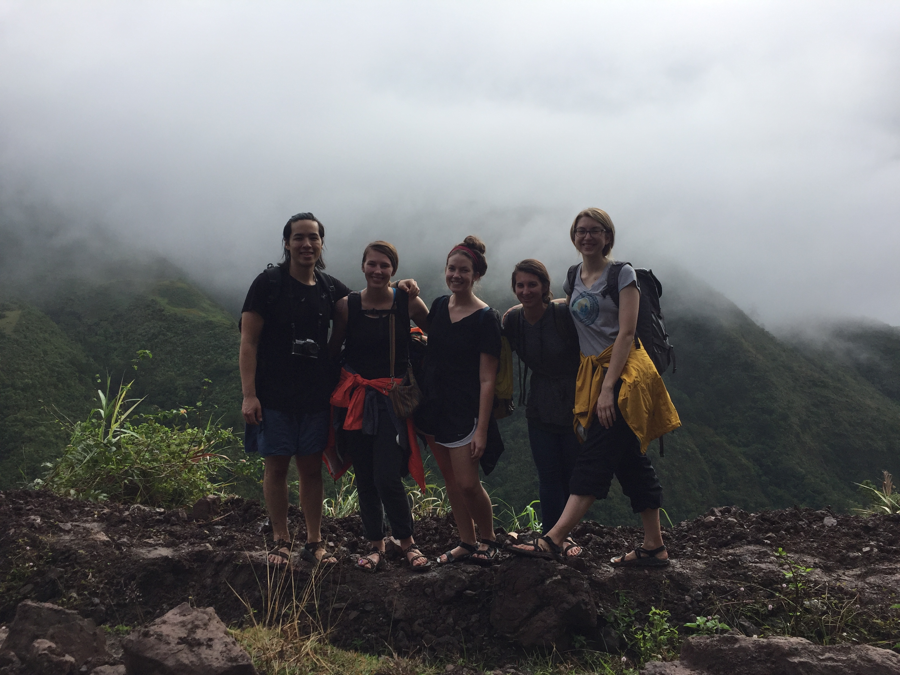

Hi, my name is Morgan. I'm in my third year of college, studying chemical engineering at Illinois Insitute of Technology in Chicago's Bronzeville neighnorhood. I was born in Southern California but have lived many differnt places throughout my life. In the last 10 years I've lived in Iowa, Arkansas, Washington State, Kenya, and Illinois. I believe this has made me a more well-rounded and adjustable person. Chicago is one of my favorite places to live, I love the size of the city and am thankful for the people I've met during my time here. Studying chemical engineering has been extemely fun and rewarding. I hope to use my degree to find ways to provide more accessible clean and renewable energy around the world.
I enjoy spending my time mentoring and coaching young people in Chicago. During the summers I coach baseball with an organization called Chicago Westside Sports. Chicago Westside Sports is a group of volunteers representing local organizations working together to provide opprotunites for kids to engage in safe and healthy activities. I also volunteer through an organization called Refugee One, tutoring elementary aged kids. Every year, Refugee One welcomes hundreds of refugees through the United States Refugee Admission Program. I enjoy getting to meet children and their families from all over the world! I have been tutoring a girl called Preya from Rwanda for four years now. During the pandemic, I wasn't able to meet up with many of the families in person but we were able to deliever groceries and other household supplies to their doorsteps. The other place I really enjoy volunteering is at the farmers market on Saturday mornings, but I don't get to do that very often because of lack of time.
 My interests include traveling, hiking, biking, sports, gardening. In the summer I enjoy bikng on the lake with my husband, we usually try to go on a long bike ride every weekend! My favorite sports team is the Philadelphia 76ers.
